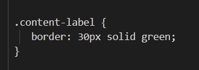
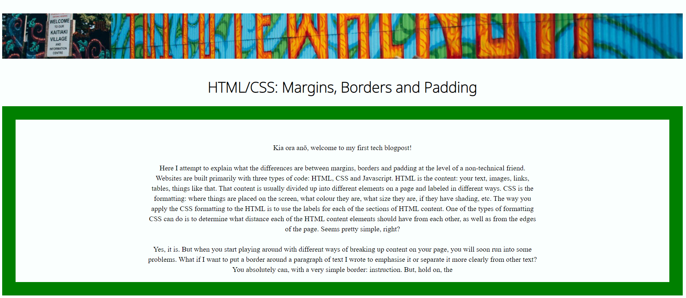
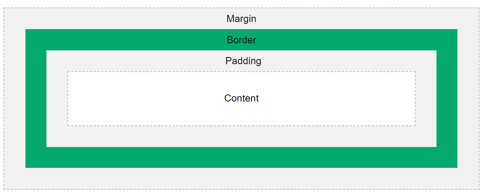
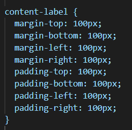

Kia ora anō, welcome to my first tech blogpost!
Here I attempt to explain what the differences are between margins, borders and padding at the level of a non-technical friend.
Websites are built primarily with three types of code: HTML, CSS and Javascript. HTML is the content: your text, images, links, tables,
things like that. That content is usually divided up into different elements on a page and labeled in different ways.
CSS is the formatting: where things are placed on the screen, what colour they are, what size they are, if they have
shading, etc. The way you apply the CSS formatting to the HTML is to use the labels for each of the sections of HTML content. One of
the types of formatting CSS can do is to determine what distance each of the HTML content elements should have from each other, as well
as from the edges of the page. Seems pretty simple, right?
Yes, it is. But when you start playing around with different ways of
breaking up content on your page, you will soon run into some problems. What if I want to put a border around a paragraph of text I wrote
to emphasise it or separate it more clearly from other text? You absolutely can, with a very simple border: instruction. This is what it
looks like when you put it in your code or text editor:

Whatever the label of the content you're trying to give a border to goes where it says 'content-label'. The '{}' brackets just make it clear
what bit of code you're applying to the label exactly (not anything after the closing bracket). With the border: instruction, you can then
specify immediately after how thick you want the border to be (15pixels (px) in the example, but can also be in the other units accepted by css),
whether it is solid, dotted, or a range of other options CSS permits and what colour the border should be. This is what it looks like when applied
to this page:

Looks good! I can also adjust how much space there is between the content (including the border) and the other bits of content around it, or
the edges of the page. That is what margins are for. But what if I want to make more space between my content and its border? Good question.
To make sure we are changing the right thing, we use padding to refer to the space between content and its border. If this is confusing
it will hopefully be made clear visually with what is known as the 'CSS Box model', as pictured below:

Therefore, as you can see, both padding and margin refers to the amount of space around your content. The difference only arises when you
have a border around your objects. Therefore, if you don't have a border, using either margin or padding to create or reduce space between
your content and the things around it makes no difference. Indeed, they work the same way. You can either create uniform padding or margins
around the content, or you can specify padding or margins either above (at the top) of the content, below (bottom), to the left, or right
of the content and its otherwise invisible box (if there is no border, and the background colour of that particular content box is the same
background colour as the other content around it). Here's what these commands look like when you're putting them in your code:

Hopefully that clears up the difference! I know writing it it did for me! Mauri ora.